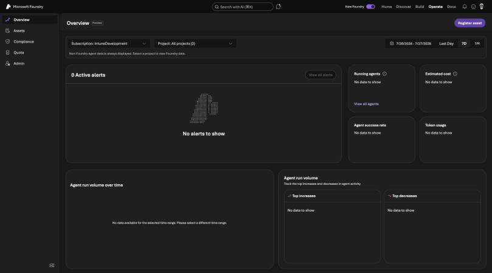
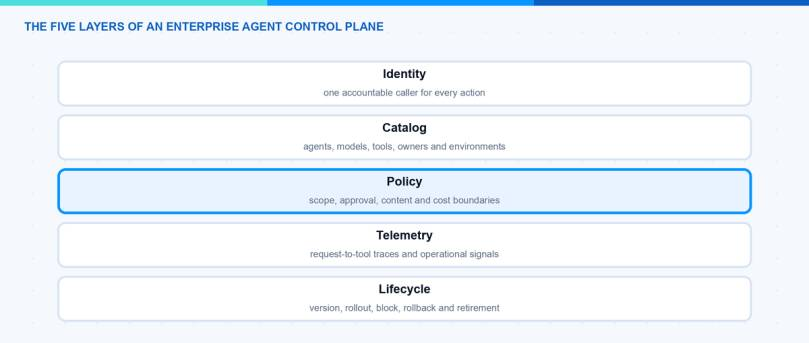
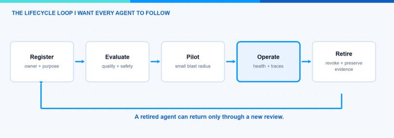

I do not want another dashboard for enterprise AI agents. I want an enterprise agent control plane that can answer who owns an agent, what it can call, how it behaves and how to stop it. In this blog post I explain the five layers I would connect: identity, catalog, policy, telemetry and lifecycle.
Microsoft Foundry now has a Control Plane experience for visibility and lifecycle operations across agents. That is an important platform building block. My broader point is that an enterprise control plane is also an operating model. It has to connect the AI platform with Microsoft Entra ID, Azure API Management, monitoring, data governance and the teams that own the affected systems.
What Is an Enterprise Agent Control Plane?
An enterprise agent control plane is the place where technical controls and operational ownership meet. It is not the runtime that executes every agent. It is the layer that lets administrators discover, govern, observe and retire agents across runtimes.
In the Microsoft Foundry Operate experience below, the overview already brings together alerts, running agents, cost, success rate, token usage and run volume. This is the right direction because operating agents requires more than a list of deployments.

Microsoft describes Foundry Control Plane as a unified management interface for agents, models and tools. It provides fleet visibility, governance and control across Foundry resources. I see this as the Microsoft Foundry layer of a larger enterprise design.
Which Five Layers Does the Control Plane Need?

1. Identity — One Accountable Caller
Every agent needs an owner and an identity. These are related, but they are not the same.
The owner is the person or team accountable for the use case. The identity is the workload that receives permissions and appears in technical logs. I want both to be visible in the inventory, together with the business purpose, environment and expiry or review date.
Microsoft Foundry uses Azure role-based access control for the management plane. The assets visible to a user depend on that user’s access to the underlying resources. This is a good security property, but it also means that a central operations team needs intentional read access if it is expected to maintain a complete inventory.
For agent actions, I prefer dedicated workload identities and narrow permissions. A shared application registration for many unrelated agents makes ownership and revocation harder.
2. Catalog — Know What Exists
An enterprise cannot govern an agent it cannot find. The catalog therefore needs more than the agent name.
For each agent I would store:
- owner and business purpose;
- platform, project and environment;
- model and deployment;
- tools, MCP servers and data sources;
- identity and permission scope;
- current version and lifecycle state;
- linked evaluations, traces and incidents.
Microsoft Foundry Control Plane can discover and list supported agent assets across projects. Other platforms may need registration or connectors. I would not wait for one product to discover everything automatically. A lightweight manual registration is better than an invisible production agent.
Hint: Make the catalog part of deployment. Do not ask a central team to rebuild it later from billing data and audit logs.
3. Policy — Turn Rules Into Boundaries
A policy document is useful, but it does not stop a tool call. The control plane should connect written rules to enforceable boundaries.
I group policy into four areas:
- Access policy: who can build, publish, operate and call the agent.
- Tool policy: which tools and data sources the agent can use.
- Runtime policy: content controls, network boundaries, quotas and approvals.
- Release policy: required evaluations and evidence before a version reaches production.
No single Microsoft service owns all four. Microsoft Entra ID and Azure RBAC handle identity and management access. Microsoft Foundry provides project, model, agent and evaluation controls. Azure API Management can govern shared API and MCP boundaries. Data and compliance services protect the information the agent reads and writes.
The important part is the connection between them. If the catalog says an agent is read-only but its backend identity can delete data, the label is meaningless.
4. Telemetry — Connect the Whole Run
Agent telemetry has to connect the user request with every model, tool and backend action. A green health tile alone cannot explain why a workflow produced the wrong result.
I want three views:
- Operational: availability, latency, errors, token usage and cost.
- Behavioral: tool selection, refusal, loop detection and evaluation results.
- Security: identities, permission failures, unusual destinations and high-impact actions.
Microsoft Foundry tracing can capture prompts, responses and agent workflow details. Microsoft also makes clear that traces can contain customer and personal data. Access, redaction and retention therefore belong in the design. The official Foundry tracing and data handling guidance recommends avoiding secrets and restricting access to trace data.
I also use correlation IDs across the gateway and backend. This keeps the investigation path intact when an agent uses an MCP server or REST API outside Foundry.
5. Lifecycle — Start, Stop, Block and Retire
Agents need a lifecycle, not just a deployment date. A useful control plane should support registration, evaluation, pilot, operation and retirement.

Microsoft documents lifecycle operations such as start, stop and block for supported agents in Manage agents at scale in Microsoft Foundry Control Plane. The available action depends on the agent platform, type and publishing state.
Stopping runtime compute is only one part of retirement. I also want to revoke identities, remove secrets, close network paths, archive required evidence and mark the catalog entry as retired. Otherwise the old agent may disappear from the dashboard while its permissions stay active.
How Would I Divide Responsibility?
The control plane needs clear ownership. I would use a model like this:
| Team | Main responsibility |
|---|---|
| AI platform team | Foundry resources, models, agent platform and shared evaluation services |
| Identity and security team | workload identity, privileged access, detection and incident response |
| API platform team | governed API and MCP entry points, quotas and shared telemetry |
| Data owners | approval for data access, classification and retention requirements |
| Product team | business outcome, agent behavior, user experience and day-to-day ownership |
The central AI team should provide the paved road. The product team remains accountable for the agent it releases.
What Would I Build First?
I would not start with a perfect enterprise dashboard. I would start with four enforceable basics:
- A required owner and purpose for every production agent.
- A searchable catalog with identities, tools and data sources.
- A release gate that stores evaluation and approval evidence.
- A tested block and retirement procedure.
Telemetry and cost views can grow from there. These four controls already answer the questions that matter during an incident: what is this, who owns it, what can it reach and how do we stop it?
For tool-level controls, my related guide Azure API Management MCP: The Control Plane for Agent Tools shows how a gateway can create a shared policy and telemetry boundary. The article Five Gates Before an MCP Tool Reaches Production goes deeper into identity, scope, limits, approval and evidence.
An enterprise agent control plane is not one product. It is the operating model that connects ownership with enforceable controls. Microsoft Foundry gives us a strong place to start, but the design becomes real only when identity, tools, data and lifecycle are connected.
I hope this is a little help when you plan the operating model for your agent estate.
Stay healthy, Cheers Jannik